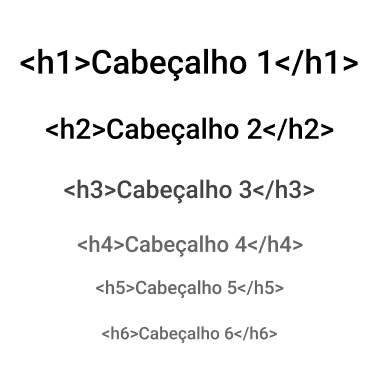

HTML não é uma linguagem de programação.
HTML (Hypertext Markup Language ou na tradução para o português Linguagem de Marcação de Hipertexto) é uma linguagem
utilizada para construção de páginas de Internet. HTML define um conjunto de regras que permite a formatação de páginas.
Um documento HTML consiste em um arquivo de texto que será lido e interpretado como uma página por browsers (navegadores),
como por exemplo, Chrome, Firefox, Opera, Edge ou Safari.
Com o recurso Inspecionar Elemento, você pode ver o funcionamento interno do site. Embora você só possa ver marcas
front-end como HTML e CSS isso lhe dá uma maneira de ver precisamente como os desenvolvedores construíram um site.
Você pode encontrá-la em alguns lugares diferentes, muitas vezes através de um menu da barra de ferramentas, clicando
com o botão direito em uma página e selecionando a opção, ou com um atalho no teclado.
Páginas HTML possuem elementos de marcação, chamados de tags, que indicam como a página deverá ser formatada.
Tags são indicadas entre os símbolos de abertura e fechamento. Sua responsabilidade principal é demarcar a estrutura de uma página da web.
Essa estrutura do HTML é formada por um conjunto de elementos, os hipertextos, que se conectam entre si formando a página.
As tags, são utilizadas para informar ao navegador que tipo de estrutura é essa que está sendo construida, podendo ser títulos
parágrafos, imagens ou links.As tags são formadas por uma estrutura própria, iniciam com o sinal "menor que", em seguida
vem o nome do elemento e depois o sinal de "maior que".As tags precisam de fechamento, e existem tags que fecham sozinhas,
as tags de auto fechamento.
A estrutura básica do HTML
DOCTYPE - não é uma tag, é uma declaração que informa ao navegador qual a versão do HTML que é utilizada no arquivo.
html - indica o ínicio e o fim de um documento. Todo conteúdo precisa ser colocado entre a tag de abertura e fechameto.
title - essa tag é usada para mostrar o título da página.
head - é o primeiro elemento dentro da tag HTML e contém os as informações que geralmente não aparecem para o usuário final.
body - dentro dessa tag está todo o conteúdo do corpo da página.
Atributos são palavras especiais usadas dentro da tag de abertura para controlar o comportamento do elemento.Com os atributos
podemos identificar melhor um elemento, informar qual arquivo aquela tag deve utilizar, indicar o tipo de um campo de texto, etc...
Há dois tipos de atributos no HTML, os globais que são aceitos por todas as tags, exemplos: lang, class, style, id e outras,
também existem os específicos que somente algumas tags possuem, como src, disabled, href, label, etc...
As tags de cabeçalho, ajudam a criar uma hierarquia entre as partes do texto, separando-o em seções. A tag h1 é o cabeçalho de maior
relevância, seguido pelo h2, h3, h4, h5, e vai até o h6 de menor importância.
Existem dois tipos de listas Ordenadas e Não Ordenadas:
Listas Não Ordenadas: é uma lista que coloca marcadores antes de cada elemento.
Listas Ordenadas: é uma lista que enumera os elementos.
Links permitem que o usuário navegue de uma página a outra.
Devem ser declarados com a tag a. Exemplo:
Dio.me